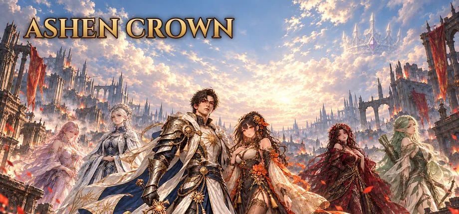
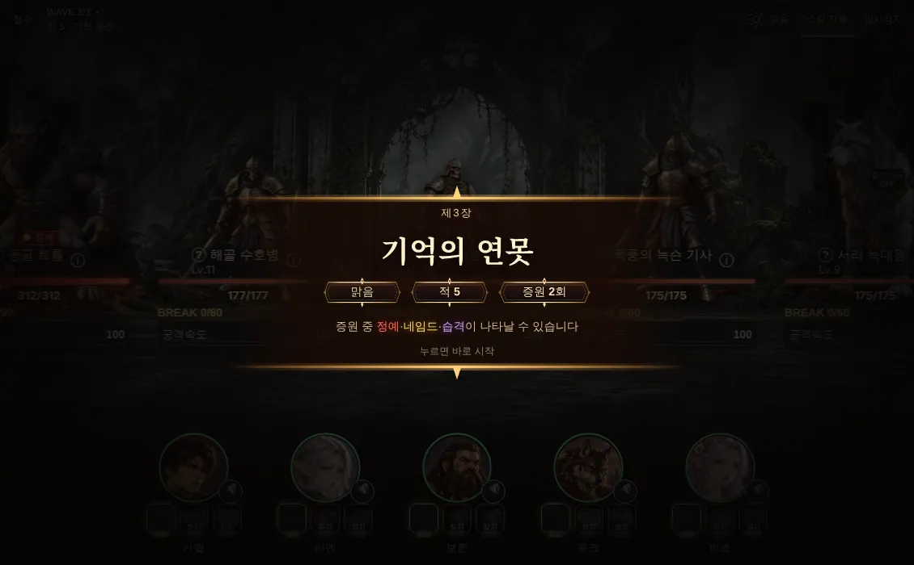
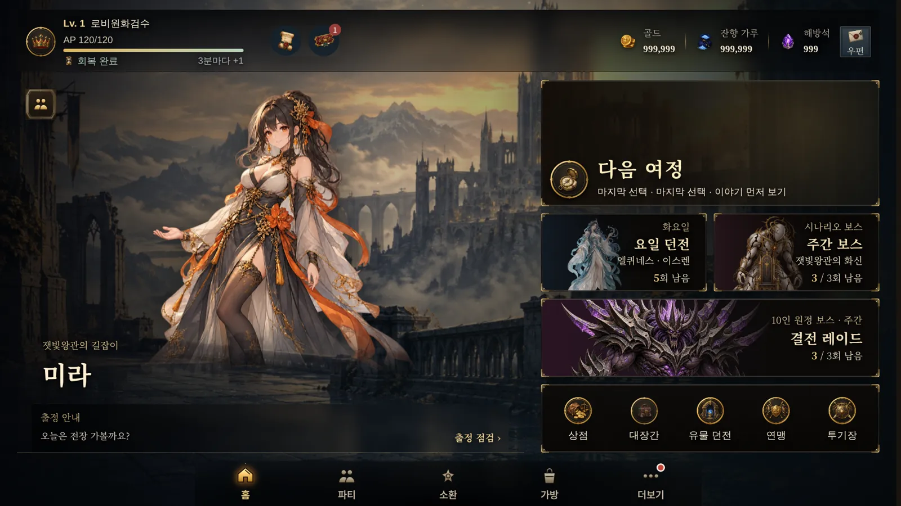
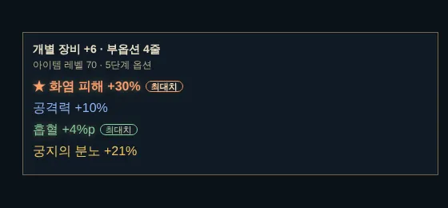

EPIC
에픽 세트Epic sets
물리·마법·수호 세 갈래의 세트 장비. 모아 입으면 파티의 역할이 또렷해집니다.
Set gear in three lines: physical, arcane and warden. Complete a set and the role sharpens.

동료를 모아 파티를 짜고, 전열에서 실시간으로 부딪히는 전투를 지휘하는 수집형 RPG입니다. 날아오는 마법까지 막아 내는 전투, 매번 다른 몬스터, 레이드와 유물 던전을 오가는 파밍, 그 끝에서 만나는 에픽과 신화 장비. A collectible RPG where you gather companions, build your party, and command real-time front-line battles. Block spells mid-air, face ever-changing monsters, farm raids and relic dungeons, and chase Epic and Mythic gear.
신들이 사라진 뒤 재가 내리는 세계. 변경의 무너진 성채에서 왕관 파편의 흔적을 발견한 주인공과 동료들은, 그것이 권력의 상징이 아니라 신과 종족이 맺은 오래된 맹약의 장치였다는 사실에 다가갑니다. 마지막에는 세계가 어떤 모습으로 이어질지 직접 선택하게 됩니다.
The gods are gone, and ash falls from the sky. In a ruined frontier fortress, you and your companions find a shard of the crown, and slowly learn it was never a symbol of power but the seal of an ancient pact between gods and mortals. In the end, you decide what the world becomes.
잿빛 성채와 그 아래 균열의 심연The ashen citadel and the abyss beneath
잊힌 숲의 노래, 모래에 묻힌 사막 왕국A forgotten forest's song, a kingdom buried in sand
검은 바다, 그리고 신을 삼킨 바다The black sea, and the sea that swallowed a god
불타는 대지와 왕관 너머의 마지막 경계Burning lands and the last border beyond the crown

적의 화염구와 마법은 천천히 날아와 닿는 순간 터집니다. 그 사이에 막을지, 쏘아 떨어뜨릴지, 피할지는 동료의 직업과 성격에 따라 다릅니다. 다섯 동료가 전열에서 실시간으로 싸우고, 기술은 자동으로 두거나 직접 눌러 쓸 수 있습니다.
Enemy fireballs and curses travel slowly and burst on impact. Whether your party blocks, shoots them down or dodges depends on each companion's class and personality. Five companions fight in real time; skills run on auto or fire by your hand.
동료 94명 중 88명이 저마다 다른 대응 방식을 가지고 있고, 막는 확률은 능력치·기술·장비로 키울 수 있습니다.88 of the 94 companions have their own way of reacting, and every chance can be raised with stats, skills and gear.
증원이 올 때마다 무엇이 나올지 모릅니다. 뒤에서 들이닥치는 급습, 특수 능력이 붙은 정예, 이름과 고유 필살기를 가진 네임드까지. 지역이 바뀌면 적의 모습과 특성도 바뀝니다.
Every reinforcement wave is a surprise: an ambush from behind, elites with special traits, or a named monster with its own title and signature move. New regions bring new enemies and new traits.
콘텐츠마다 보스의 성격과 얻는 재료가 다릅니다. 요일과 주마다 바뀌는 조건에 맞춰 파티를 다시 짜는 것이 공략의 핵심입니다.
Each mode has its own bosses and its own loot. Re-building your party for each day's and each week's conditions is the heart of the game.

장비는 등급과 무작위 옵션이 붙어서 떨어집니다. 같은 이름의 검도 옵션이 매번 다르고, 최대치로 붙은 줄은 빛으로 알려 줍니다. 그리고 그 끝에는 이야기를 품은 특별한 장비가 기다립니다.
Gear drops with a rarity and randomized affixes; no two swords roll the same, and max rolls glow. At the very end waits gear with a story of its own.
물리·마법·수호 세 갈래의 세트 장비. 모아 입으면 파티의 역할이 또렷해집니다.
Set gear in three lines: physical, arcane and warden. Complete a set and the role sharpens.
신화 장비마다 고유한 색과 이야기가 있습니다. 능력이 발동하면 장비에 깃든 전설 속 인물이 착용자 곁에 나타나 함께 공격하고, 지키고, 치유합니다.
Every Mythic has its own color and legend. When its power triggers, the figure bound to it appears beside the wearer to strike, shield or heal.
레이드와 유물 던전에서 원초의 불씨와 신화 조각을 모아 대장간에서 조합합니다. 실패할수록 다음 성공 확률이 오릅니다.
Gather Primal Embers and Mythic Shards from raids and relic dungeons, then forge it. Each failure raises the next chance.



동료마다 세력과 이야기가 있고, 함께 지내며 쌓는 유대가 능력치를 올려 줍니다. 소환 확률과 천장은 게임 안에 모두 공개하고, 유료 재화 「왕관석」은 임무·출석·업적으로도 꾸준히 모을 수 있습니다.
Every companion has a faction and a story, and bonds raise their stats. All summon rates and pity are published in game, and Crown Gems can be earned steadily through missions, log-ins and achievements.
출시 전에 실제 플레이어의 눈으로 게임을 다듬으려고 합니다. 난이도, 재미, 불편한 점을 솔직하게 알려 주실 분을 찾습니다. 시험은 무료이고, 일정과 받는 방법은 신청하신 메일로 따로 안내드립니다.
Before launch we want real players to tell us what works and what doesn't: difficulty, fun, and anything that gets in the way. Testing is free, and we'll email you the schedule and how to get the build.
메일 앱이 열리지 않으면 아래 주소로 보내 주세요.If no mail app opens, write to:ashencrown.support@gmail.com
네. 무료로 플레이하고, 게임 안에서 유료 재화 「왕관석」을 살 수 있습니다. 왕관석은 임무·출석·업적으로도 꾸준히 모을 수 있게 만들고 있습니다.
Yes. The game is free to play, with an optional premium currency, Crown Gems, that you can also earn steadily through missions, log-ins and achievements.
출시일은 아직 정하지 않았습니다. Steam(PC)에 앞서 해보기로 먼저 나오고, 이후 모바일도 준비할 예정입니다.
No date yet. It will come to Steam (PC) first as Early Access, with mobile planned later.
한국어와 영어를 지원할 예정입니다.
Korean and English are planned.
시험마다 안내 메일에 따로 적어 드립니다. 안내가 없을 때는 먼저 문의해 주세요.
Each test's invitation email will say. If it doesn't, please ask us first.